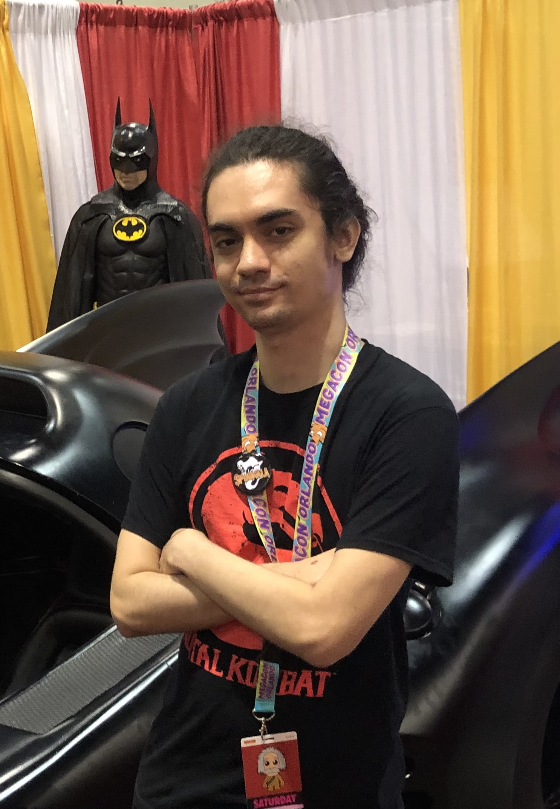

About Me
Greetings, my name is Caelan Beebe. I was born in Cherrypoint, North Carolina on December 24, 1999. My hometown is Waikoloa Village, located on the Big Island of Hawai'i. In the winter of 2012, my family moved to Tallahassee, Florida, where I reside to this day. In my free time, I tend to appreciate perusing books, observing motion pictures, and playing video games. My favorite style of books tends to be fantastical in nature. I appreciate inundating myself with fictional universes and envisioning how they vary from our world. For motion pictures, I generally enjoy watching those that fall into the horror genre. Suspense, eerie ambience, and terrifying villains all combine into an experience you simply do not get with other genres. When it comes to gaming, I value both the story and gameplay equally. Funnily enough, the type of video games I typically play the most are either fantasy or horror (and on rare occasions, both). Academically, I am labeled as a Junior. In 2018, I graduated from Lawton Chiles High School. In 2023, I earned my Associate in Arts degree from TCC (now known as TSC). When I graduated from TCC, I was considered an Honor Graduate and had been placed on the Dean's List. This year, I am a transfer student at FAMU, in pursuit of a Bachelor of Science degree in Computer Science. In the future, I hope to pursue a career in Game Design, incorporating elements of both fantasy and horror and combining them into a fun and unique experience.
Theatrical Performances
She Kills Monsters as Steve
A play about Agnes Evans, who reconnects with her recently deceased sister through playing her favorite tabletop game Dungeons and Dragons.
Cinderella as Ballroom Dancer
A musical about Cinderella, a poor servant girl who eventually ascends into royalty via marrying a prince.
Skills
- CSS
- HTML
- JavaScript
- Python
Hobbies
In my free time, I enjoy:
- Reading books
- Watching movies
- Playing video games
Education
| Year | Institution | Achievement |
|---|---|---|
| 2018 | Lawton Chiles High School | High School Diploma |
| 2023 | Tallahassee Community College (TSC) | Associate in Arts Degree |
| 2024 | Florida A&M University (FAMU) | Currently Pursuing Bachelor of Science in Computer Science |
Contact
Get in touch with me:
Connect with me on LinkedIn.